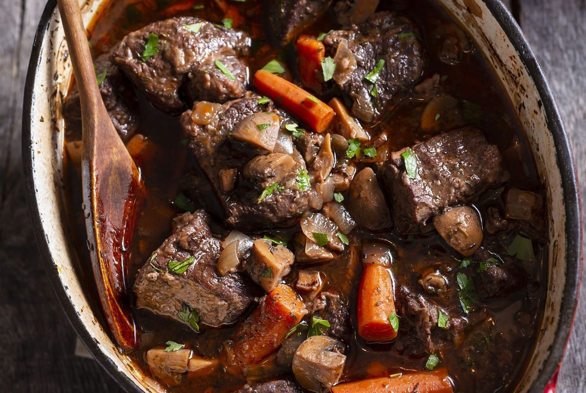

Boeuf Bourguignon

Description
Le boeuf bourguignon est un ragout mijoté longuement. Il est composé de vin rouge de bourgogne,
de carottes, de champignons, de lardons et d'oignon grelot
Ingrédients pour 4 personnes
- 800 gr de paleron de boeuf
- 200 gr d'oigon grelot
- 4 carottes
- 200 gr de champignons
- 100 gr de lardons fumé
- 1 cuillère à soupe de farine
- 800 ml de vin rouge
- Sel
- Poivre
Etapes de la recette
- Tailler des cubes de 3 cm de côté de paleron de boeuf,
emincer les champignons, tailler les carottes en rondelles.
- Dans une marmite (en fonte de préférence) faite saisir les morceaux de boeuf préalablement
assaisonné et dans une poël faite suer les lardons avec une légère colloration.
- Réunir les lardons avec le boeuf, puis ajouter la farine,
mélanger le tout rapidement puis ajouter le vin rouge
(si le niveau de liquide n'est pas à hauteur, rajouter de l'eau),
mijoter à couvert pendant minimum 45 minutes.
- en fin de cuisson ajouter les oignons, carottes et champignons. Arrêter la cuisson
des que les carottes soient cuitent.
Servir chaud; Accompagner de pomme de terre, de riz basmati ou même de pain toasté.